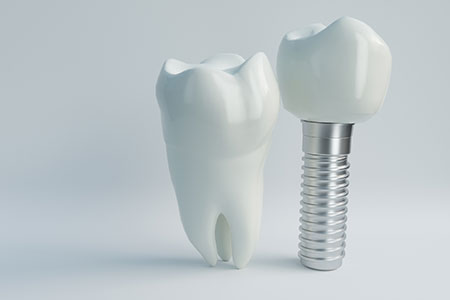

- TOP
- インプラント治療

インプラント治療はひと昔前と比べて身近になってきました。歯を失うのは、虫歯や歯周病の悪化によるだけでなく、スポーツや事故、ケガでも起こり得ます。誰にでも歯を失うリスクはあるのです。そのときの治療の選択肢として、インプラント治療は広く選ばれるようになっています。
大阪府高槻市の歯医者「河原歯科クリニック」では、インプラント治療を数多く手がけています。院長は、日本でも屈指の歯科医療総合メーカーGC社の「インプラントインストラクター」です。インプラント治療は比較的新しい治療法で、「痛そう・怖そう」などのイメージがまだ強いかもしれません。そのため、当クリニックではまず、丁寧なご説明からはじめます。アニメーションなどを活用して、疑問や不安、間違ったイメージを払しょくしますので、興味のある方はお気軽にご相談ください。
インプラント治療とは？
インプラント治療は、人工歯根（インプラント）を顎の骨に埋め込み、その上に人工歯冠を被せる、または特殊な入れ歯を使って歯の機能を補います。生体親和性の高いチタン製のインプラントが顎の骨にしっかり結合すると、自分の歯に近い感覚の噛み心地が得られます。被せ物をセラミック素材で作製すれば、天然歯に近い自然な見た目の実現も可能です。
インプラント治療を行う前にまず歯周病を治療しましょう
インプラントは人工物ですので虫歯にはなりませんが、口腔ケアを怠ると歯周病に似た「インプラント周囲炎」を起こします。歯周病がある人は、発症のリスクが通常の7倍におよぶというデータもあります。インプラント治療を行う際には、まず歯周病を治し、さらにしっかりメインテナンスすることが大切です。
インプラント治療に不安がある患者様へ
インプラント治療には外科治療がともないます。そのため、痛そうなイメージがあるかもしれません。また、不安を感じている方も多いと思います。しかし、インプラント治療は日々進化し、用いる機器も開発が進み、安全性が高まっています。たとえば、歯科用CTで詳細データを得て、それに基づいた治療計画のシミュレーションが可能なソフトも開発されています。さらに、サージカルガイドの利用で、手術をより短時間に、よりシンプルに、より正確にできるようになり、安全性が高まっているのです。
当クリニックでは、こういった機器を積極的に導入し、患者様だけでなく歯科医師の負担も抑えた治療をご提供しています。以前のインプラント治療の施術方法も間違いではありませんが、医療の進歩を活用して、より安全でよりシンプルな治療をご提供します。気になることは何でもご相談ください。
「河原歯科クリニック」のインプラント治療の特徴
詳細情報を立体画像で把握～歯科用CT～
インプラント治療には、精度の高い診査・診断が求められます。そのため、お口まわりの詳細情報を得られる歯科用CTを活用し、どの位置にインプラントを埋められるかをシミュレーションし、解剖学的な安全をチェックしています。インプラントを埋め込むのに十分な骨の厚みを確認するとともに、血管や神経の走行位置を立体画像で把握するのです。CT撮影とソフトウェアによるシミュレーションで安全性を高めます。
埋入手術をより正確に、より短時間に～サージカルガイド～

インプラント手術では安全性を高めるために、歯科用CTのデータを使ってシミュレーションしたインプラントを埋め込む場所や方向を、そのまま再現できるようにガイドする専用のマウスピース（サージカルガイド）を使用します。シミュレーションの際には顎の骨を立体的に把握しますが、ほかにも治療後にブラッシングがしやすいような位置かどうかの確認も欠かせません。そうして決定した埋入部位をお口の中でも再現できるように、サージカルガイドを活用するのです。計画通りの理想的なポジションと角度に埋入できるので安全性が高まり、時間の短縮にもつながるため、患者様とともに歯科医師の負担を少なくできるのです。
治療部位をしっかり把握～マイクロスコープ～
裸眼では確認が難しい細部を拡大しながら把握できるのがマイクロスコープです。抜歯をした部分にインプラントを埋入する際など、治療部位に歯の破片などの感染源が残っていないかなどをよりしっかりと把握できます。マイクロスコープを使うと視野が狭くなるので、全体的な把握が必要なインプラント埋入の際には使用できませんが、治療の要所で欠かせない機器です。
骨との強い結合が期待できるインプラント～GCインプラント・3iインプラント～
当クリニックでは、歯科先進国で数多くの実績とシェアを誇っている「GCインプラント」・「3iインプラント」を採用しています。特許取得済みの表面加工により、顎の骨との強い結合が期待できるのが特長です。
インプラント埋入手術について
インプラントの埋入手術は、安全性・確実性を考慮して2回の手術を行う「2回法」がほとんどです。ただし、顎の骨の量が十分あり、かつ歯肉も健康であるときには、1回の手術で人工歯を被せます。
インプラント治療の流れ
2回法
- STEP1
-
麻酔後に歯肉を開きます。
- STEP2
-
顎の骨に穴を開けてインプラントを埋入します。
- STEP3
-
インプラントを歯肉で覆い、安定するまで待ちます。
- STEP4
-
ふたたび歯肉を切開し、ヒーリングアバットメントを装着して歯肉を閉じます。
- STEP5
-
歯ぐきが治癒し、整うまでは治癒期間とします。
- STEP6
-
ヒーリングアバットメントをアバットメントと交換し、その上に歯冠を被せます。
1回法
- STEP1
-
麻酔後に歯肉を開き、顎の骨に穴を開けてインプラントを埋入します。
- STEP2
-
同時にヒーリングアバットメントも取りつけ、インプラントが安定するのを待ちます。
- STEP3
-
ヒーリングアバットメントをアバットメントと交換し、その上に歯冠を装着します。
インプラント治療ができないといわれた方へ
インプラントを埋め込むためには、顎の骨の量や幅、厚みが必要です。これらが足りないために他院でインプラント治療を断られてしまった場合でも、再生療法によってインプラント治療が可能になるケースがあります。高槻市の河原歯科クリニックでは再生治療も行っていますので、インプラント治療を諦める前に一度ご相談ください。
治療が終わったら必ずメインテナンスを
治療を終えて「新しい歯」を装着したらゴール――ではありません。そこからはメインテナンスのスタートです。インプラントのメインテナンスを怠ると、歯周病に似た「インプラント周囲炎」というトラブルを招いてしまうことがあります。炎症を起こしたまま放っておくと、せっかく入れたインプラントが使えなくなる可能性があるので注意しましょう。ずっとインプラントと人工歯を使えるように、必ずメインテナンスにいらしてください。
保証について
当クリニックでは、定期的にメインテナンスにご来院いただいている患者様に、下記の保証をご用意しております。症例によって条件や費用は異なりますので、まずはご相談ください。
| インプラント体の保証 | 埋入後10年 |
|---|---|
| インプラント上部構造（歯冠） | 装着後5年 |